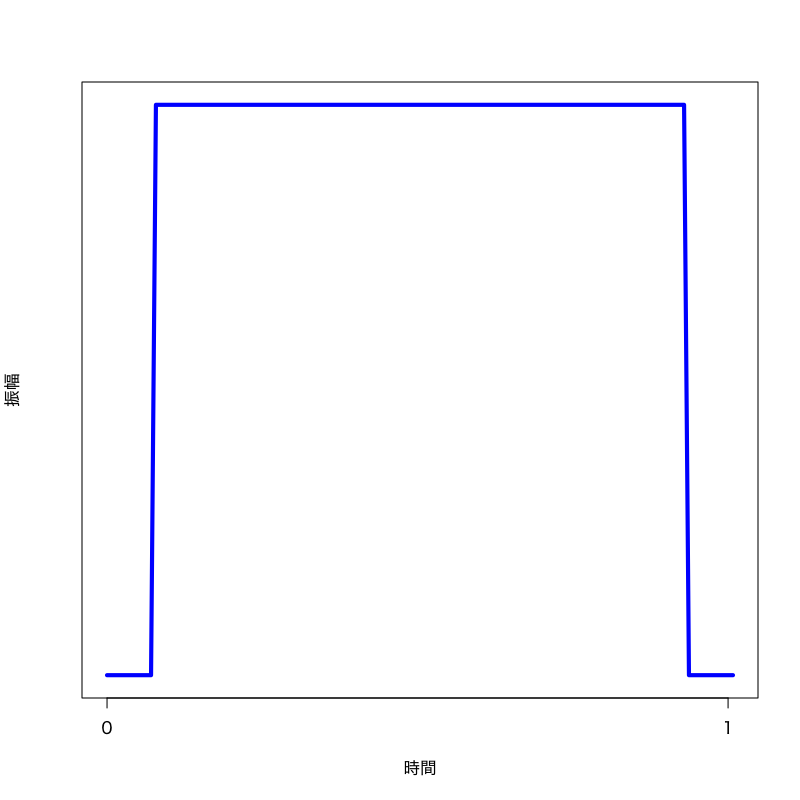
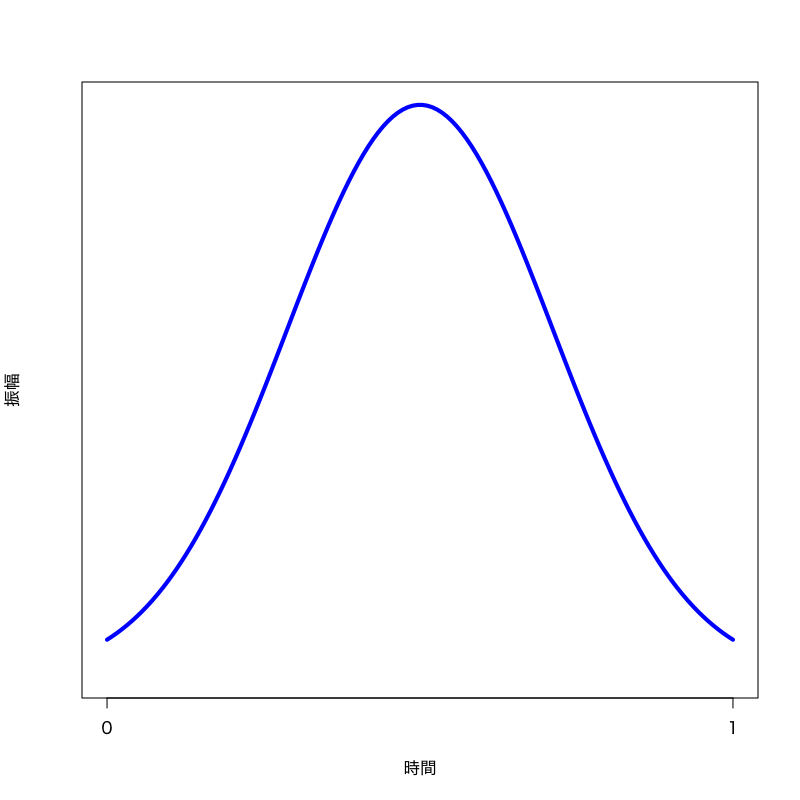
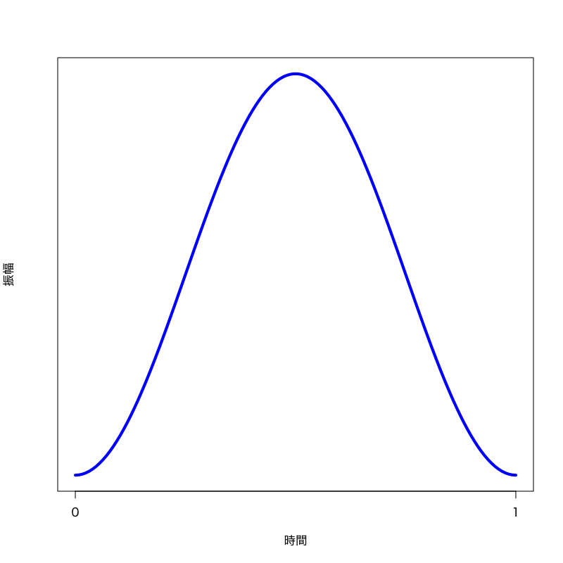
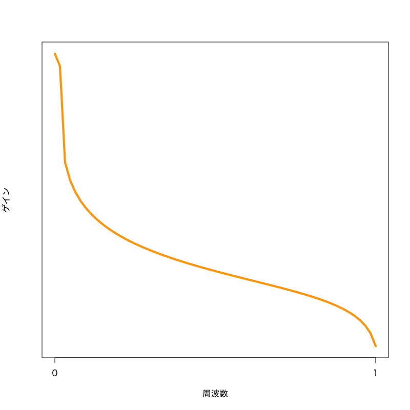
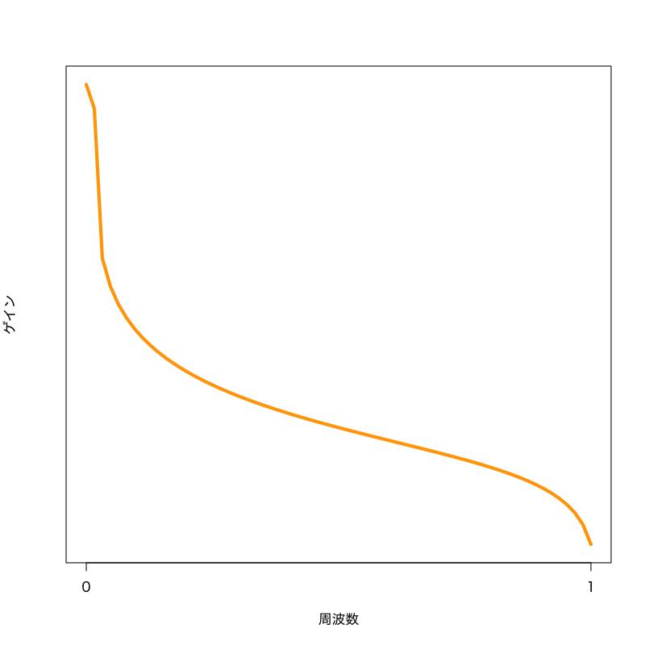

離散 Fourier 変換
信号処理 - 第11講
(Press ? for help, n and p for next and previous slide)
前回のおさらい
デジタル信号処理
- 計算機で信号を扱うための方法論
- 処理の流れ
- アナログ信号をデジタル信号に変換 (A/D変換)
- 計算機上でデジタル信号を処理
- デジタル信号をアナログ信号に変換 (D/A変換)
標本化と量子化
- デジタル信号に変換するための離散化
- 標本化 (sampling) : 時間の離散化
- 量子化 (quantization) : 数値の離散化
標本化定理
定理
信号 \(f(t)\) が \(B\,[\mathrm{Hz}]\) 未満の周波数しか含んでいないなら， \(1/2B\,[s]\) ごとのサンプル点を用いて元の信号は完全に求められる．

標本化における用語
- 1秒間に取るサンプル数 \(f_{s}\,[\mathrm{Hz}]\):
サンプリング周波数 - 再構成に必要なサンプリング周波数の下限 \(2B\,[\mathrm{Hz}]\):
Nyquist レート - 信号に含まれる周波数の上限 \(B\,[\mathrm{Hz}]\):
Nyquist 周波数 - 角周波数と周波数の関係に注意
エイリアシング
折り返しによる雑音
\(4\pi B\) 周期の関数 \(\tilde{f}\) を構成する際に重なりが生じ， 切り出した \((-2\pi B,2\pi B)\) 領域を 元に戻すことができない．

演習
練習問題
サンプリング周波数
会話に必要な周波数帯域は \(300\,[\mathrm{Hz}]\) 以上 \(7\,[\mathrm{kHz}]\) 未満と言われている． テレビ会議などでこの帯域を十分に伝達するために必要なサンプリング周波数はどのようになるか答えよ．
離散 Fourier 変換
計算機による信号処理
- 連続時間では扱えない
- 標本化により時間を離散化
- 周波数帯を限定すれば情報は失われない
- 有限長のデータしか扱えない
- 周期的な信号として扱う
- 有界な台を持つ信号として扱う
離散 Fourier 変換
定義
長さ \(N\) の信号 \(f(t),\;t=0,1,\dotsc,N{-}1\) の離散 Fourier 変換を以下で定義する．
\begin{equation} \hat{f}(n) =\frac{1}{\sqrt{N}}\sum_{t=0}^{N{-}1} f(t)e^{-i\frac{2\pi}{N}nt}, \quad (n=0,1,2,\dotsc,N{-}1) \end{equation}- 慣習的に周波数 \(n\) や時間 \(t\) は1ではなく0から始まる整数
- 時間 \(\mathrm{[s]}\) や周波数 \(\mathrm{[Hz]}\) とは異なることに注意
逆変換
逆変換は以下で定義される．
\begin{equation} f(t) =\frac{1}{\sqrt{N}}\sum_{n=0}^{N{-}1} \hat{f}(n)e^{i\frac{2\pi}{N}nt}, \quad (t=0,1,2,\dotsc,N{-}1) \end{equation}- 信号 \(f\) は周期信号(基底) \(e^{i\frac{2\pi}{N}nt}\) の重ね合わせで表現される
- 基底は \(e^{i\frac{2\pi}{N}t}\) の高調波(基本周波数の整数倍)になる
- 各周波数信号の振幅が \(\hat{f}(n)/\sqrt{N}\) となる
演習
練習問題
サンプリング周波数と基本周波数
サンプリング周波数 \(f_{s}\,\mathrm{[Hz]}\) のデジタル信号から 長さ \(N\) のベクトルを切り出し 離散 Fourier 変換を考えたとき， 基本周波数はいくつになるか?
周波数の正負の関係
“負”の基本周波数 \(e^{-i\frac{2\pi}{N}t}\) と 標本点 (\(t\) が整数の点)で 同じ値を持つ正の基底 \(e^{i\frac{2\pi}{N}kt}\;(k>0)\) を求めよ．
練習問題
基本周波数の性質
\begin{equation} \alpha=e^{i\frac{2\pi}{N}} \end{equation}と置くと，
\begin{equation} \alpha^{N}=e^{2\pi i}=1 \quad(\text{1の\(N\)乗根の一つ}) \end{equation}となる． \(m\) を整数とするとき以下の値を求めよ．
\begin{equation} 1+\alpha^{m}+\alpha^{2m}+\dotsb+\alpha^{(N{-}1)m} \end{equation}
離散 Fourier 変換の行列表現
行列による表現
\(N\) 乗根を用いた展開
\(\alpha\) を用いて定義式を書き下すと
\begin{align} \hat{f}(n) &=\frac{1}{\sqrt{N}}\sum_{t=0}^{N{-}1}f(t)\alpha^{-nt}\\ &=\frac{1}{\sqrt{N}} \left( f(0)\alpha^{-n\cdot0}+f(1)\alpha^{-n\cdot1}+ f(2)\alpha^{-n\cdot2}+\right.\\ &\qquad\qquad\left.\dotsb+f(N{-}1)\alpha^{-n\cdot(N{-}1)}\right) \end{align}となる．
変換行列
\begin{equation} F = \frac{1}{\sqrt{N}} \begin{pmatrix} 1&1&1&\dots&1\\ 1&\alpha^{-1}&\alpha^{-2}&\dots&\alpha^{-(N{-}1)}\\ \vdots&&&\ddots&\vdots\\ 1&\alpha^{-(N{-}1)}&\alpha^{-2(N{-}1)}&\dots&\alpha^{-(N{-}1)(N{-}1)} \end{pmatrix} \end{equation}- 行列 \(F\) は \(N\times N\) の要素からなるが， \(\alpha\) の性質から値としては(1を含めて) \(N\) 種類しかない．
行列表現
\begin{equation} \begin{pmatrix} \hat{f}(0)\\ \hat{f}(1)\\ \vdots\\ \hat{f}(N{-}1) \end{pmatrix} = F \begin{pmatrix} f(0)\\ f(1)\\ \vdots\\ f(N{-}1) \end{pmatrix} \end{equation}\begin{equation} \hat{\boldsymbol{f}} =F \boldsymbol{f} \end{equation}
逆変換行列
\begin{equation} F^{*} =\frac{1}{\sqrt{N}} \begin{pmatrix} 1&1&1&\dots&1\\ 1&\alpha^{1}&\alpha^{2}&\dots&\alpha^{(N{-}1)}\\ \vdots&&&\ddots&\vdots\\ 1&\alpha^{(N{-}1)}&\alpha^{2(N{-}1)}&\dots&\alpha^{(N{-}1)(N{-}1)} \end{pmatrix} \end{equation}行列表現
\begin{equation} \boldsymbol{f} =F^{*} \hat{\boldsymbol{f}} \end{equation}
変換と逆変換の関係
行列 \(F,F^{*}\) の積
\begin{multline} F^{*}F\\ =\frac{1}{N} \begin{pmatrix} 1&1&\dots&1\\ 1&\alpha^{1}&\dots&\alpha^{(N{-}1)}\\ \vdots&&\ddots&\vdots\\ 1&\alpha^{(N{-}1)}&\dots&\alpha^{(N{-}1)(N{-}1)} \end{pmatrix} \begin{pmatrix} 1&1&\dots&1\\ 1&\alpha^{-1}&\dots&\alpha^{-(N{-}1)}\\ \vdots&&\ddots&\vdots\\ 1&\alpha^{-(N{-}1)}&\dots&\alpha^{-(N{-}1)(N{-}1)} \end{pmatrix} \end{multline}
\(i\) 行 \(j\) 列成分
\begin{align} (F^{*}F)_{ij} &=\frac{1}{N} \begin{pmatrix} 1&\alpha^{(i-1)}&\dots&\alpha^{(N{-}1)(i-1)} \end{pmatrix} \begin{pmatrix} 1\\ \alpha^{-(j-1)}\\ \vdots\\ \alpha^{-(N{-}1)(j-1)} \end{pmatrix}\\ &=\frac{1}{N} \left( 1+\alpha^{(i-j)}+\alpha^{2(i-j)}+ \dots+\alpha^{(N{-}1)(i-j)} \right)\\ &= \begin{cases} 1,&i=j\\ \frac{1}{N}\frac{1-\alpha^{N(i-j)}}{1-\alpha^{(i-j)}},&i\not=j \end{cases} = \begin{cases} 1,&i=j\\ 0,&i\not=j \end{cases} \end{align}
逆も同様
\begin{equation} (FF^{*})_{ij} =\begin{cases} 1,&i=j\\ 0,&i\not=j \end{cases} \end{equation}変換は可逆となる
\begin{equation} F^{*}\boldsymbol{\hat{f}} = F^{*}F\boldsymbol{f} =\boldsymbol{f} \end{equation}\begin{equation} F\boldsymbol{f} = FF^{*}\boldsymbol{\hat{f}} =\boldsymbol{\hat{f}} \end{equation}
フィルタの表現
フィルタ
定義
入力 \(f(t)\) を変換して出力 \(g(t)\) を生成する機構
線形性
入力の線形結合がそのまま出力に反映される性質
時不変性
入力の時刻がずれた場合，出力も同じだけずれる性質
デジタル信号におけるフィルタの表現
標本化されたフィルタの表現
\begin{equation} g(t)=\sum_{s=t-N+1}^{t}f(s)h(t{-}s) \end{equation}- \(f,g\) : 周期 \(N\) の入力・出力信号
- \(h\) : 長さ \(N\) のインパルス応答
周期関数の畳み込みによる表現
\begin{align} g(t) &=f{*}h(t)\\ &=\sum_{s=0}^{N-1}f(s)h(t{-}s) =\sum_{s=0}^{N-1}f(t{-}s)h(s),\\ &\quad t=0,1,\dotsc,N-1 \end{align}- \(f,g,h\) : 周期 \(N\) の関数
演習
練習問題
離散 Fourier 変換によるフィルタの表現
\(f,g,h\) を長さ \(N\) のベクトルと考え， \(g\) の離散 Fourier 変換を \(f,h\) の離散 Fourier 変換で表しなさい．
\begin{equation} g(t)=\sum_{s=0}^{N-1}f(s)h(t{-}s), \quad t=0,1,\dotsc,N-1 \end{equation}
窓関数
有限長のデータ
- 信号の一部を切り出す必要がある
- 周期的な信号として扱う
- 有界な台を持つ信号として扱う
- 不連続点の問題
- 高い周波数に対応
- 標本化定理の仮定に抵触
窓関数
信号の切り出し
\begin{equation} f(t)=w(t)\tilde{f}(t) \end{equation}- 端点での不連続性を軽減するために導入
- 周波数特性の一部を改変することに注意
- 矩形窓 (単純な切り出し)
- gauss 窓
- hann 窓
- hamming 窓
窓関数を用いたデジタル信号処理
- 処理の流れ
- 不連続性を緩和した系列の断片化 (窓関数)
- デジタル信号処理 (フィルタ処理)
- 切り出された断片を再構成 (重なりを考慮した合成処理)

矩形窓
\begin{equation} w(\tau)=\Xi_{(0,1)}(\tau) \end{equation}

Figure 1: 矩形窓

Figure 2: 周波数特性
gauss 窓
\begin{equation} w(\tau)=e^{-\frac{(\tau-0.5)^{2}}{\sigma^{2}}} \end{equation}

Figure 3: gauss 窓

Figure 4: 周波数特性
hann 窓
\begin{equation} w(\tau)=0.5-0.5\cos(2\pi\tau) \end{equation}

Figure 5: hann 窓

Figure 6: 周波数特性
hamming 窓
\begin{equation} w(\tau)=0.54-0.46\cos(2\pi\tau) \end{equation}

Figure 7: hamming 窓

Figure 8: 周波数特性
今回のまとめ
- 離散 Fourier 変換
- 変換と逆変換
- 行列による表現
- 窓関数
- 切り出すときの不連続性の軽減
- 周波数特性を考慮した窓関数